Frequently Asked Questions
General Questions
Ans.: VSI is “Vertical Shaft Impactor”.
Applications of VSI Crusher:
a) VSI Crusher is used to shape the material (For Ex. Stone); It converts flaky to cubical material.
b) It is used as a crusher to crush the product of maximum 40 mm to fines below 4.75 mm.
Uses of VSI Crusher:
Generally VSI Crushers are used in construction industries for manufacturing cubical aggregates & crushed sand.
Following Chart shows uses of VSI Crusher.
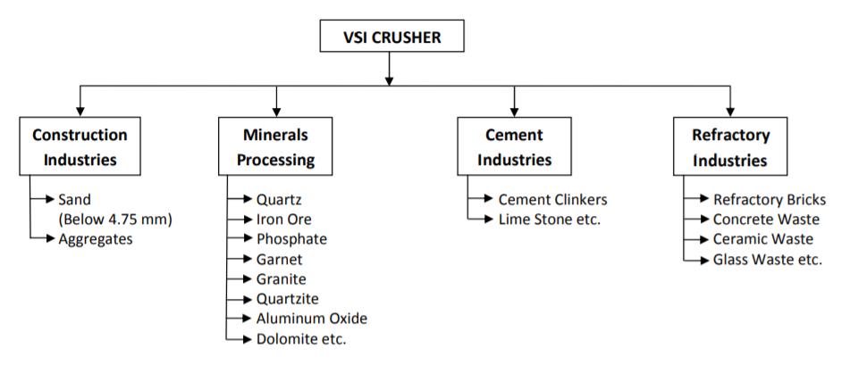
Applications of VSI Crusher:
a) VSI Crusher is used to shape the material (For Ex. Stone); It converts flaky to cubical material.
b) It is used as a crusher to crush the product of maximum 40 mm to fines below 4.75 mm.
Uses of VSI Crusher:
Generally VSI Crushers are used in construction industries for manufacturing cubical aggregates & crushed sand.
Following Chart shows uses of VSI Crusher.
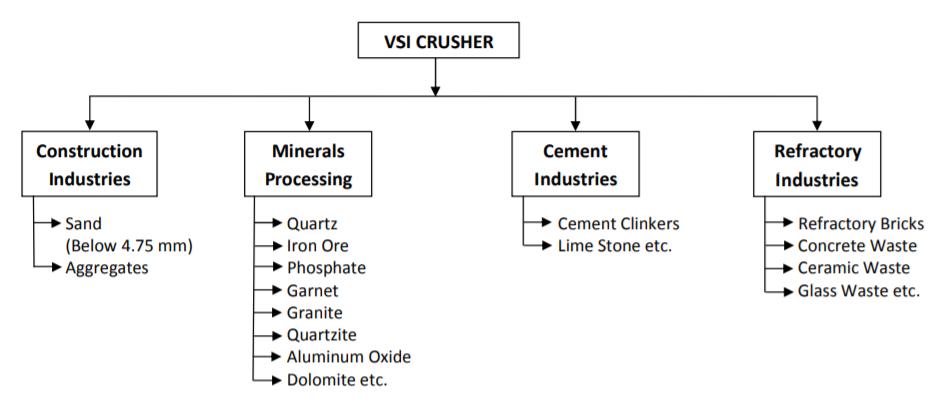
Ans.:
VSI Crusher works on Cleavage Crushing Principle (Considering Stone to be crushed). The material to be crushed is feed
in the center of the rotor which is rotating at high velocity & imparts material from rotor. The ejected material collides on a rock shell where the kinetic energy inside that material blasts it into the fine particles.
Velocity is the most important factor in VSI Crusher. For shaping the material VSI is run at low / less velocity. For crushing purpose VSI should run at high velocity.
When material imparts on the crushing chamber, a hard layer of crush material is formed inside the crushing chamber.
Velocity is the most important factor in VSI Crusher. For shaping the material VSI is run at low / less velocity. For crushing purpose VSI should run at high velocity.
When material imparts on the crushing chamber, a hard layer of crush material is formed inside the crushing chamber.
Ans: Raw material required for manufacturing Artificial Sand:
a) The stone which is durable & used for aggregate manufacturing like 20 mm, 12 mm, 6 mm available in the local area.
b) This raw material is available from local jaw crushing companies.
Feed size required for manufacturing Artificial Sand:
a) To manufacture artificial sand the recommended feed size is below 16 mm.
(Smaller the size, more is the production)
b) To manufacture artificial sand as well as cubical aggregates the recommended feed size is below 40 mm.
a) The stone which is durable & used for aggregate manufacturing like 20 mm, 12 mm, 6 mm available in the local area.
b) This raw material is available from local jaw crushing companies.
Feed size required for manufacturing Artificial Sand:
a) To manufacture artificial sand the recommended feed size is below 16 mm.
(Smaller the size, more is the production)
b) To manufacture artificial sand as well as cubical aggregates the recommended feed size is below 40 mm.
Ans.:
Sand making machines are available in different models depending up on capacity & the feed size.
Rate varies as per model selected.
Following is the model list:
 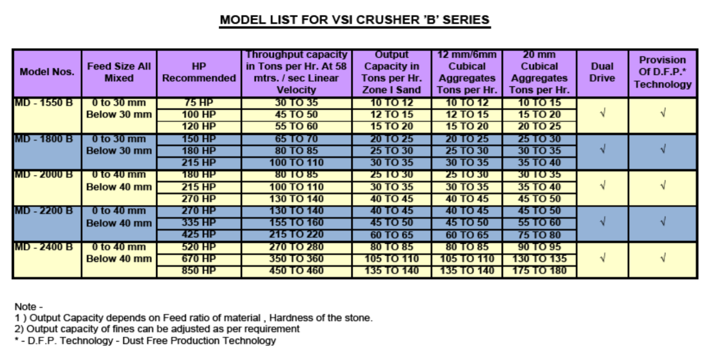
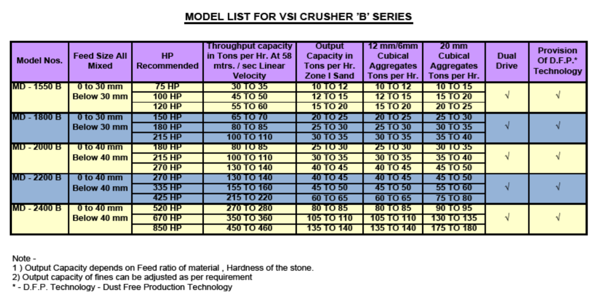
Following is the model list:
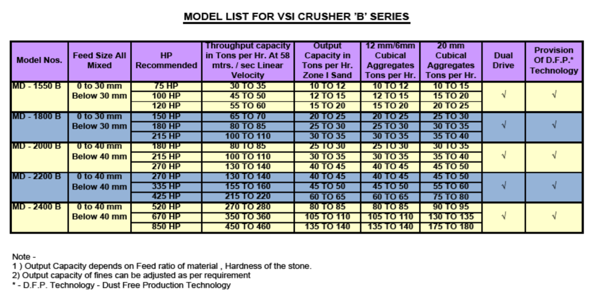
Ans.: Throughput capacity is nothing but the total material which is feed inside the VSI Crusher.
Output capacity is nothing but the finished product after screening.
Output capacity is nothing but the finished product after screening.
Ans.: ‘A’ series models are used to produce only sand (below 4.75 mm), where the feed size is 0 to 16 mm.
‘B’ series models are used to produce cubical aggregates (i.e. 20 mm & 12 mm) as well as sand (below 4.75 mm),where the feed size is 0 to 40 mm.
‘B’ series models are used to produce cubical aggregates (i.e. 20 mm & 12 mm) as well as sand (below 4.75 mm),where the feed size is 0 to 40 mm.
Ans.: Study the market demand along with the awareness & which product you want.
Ans.: Area required for set up:
Minimum 10,000 sq. feet area is required for setting up the plant.
How to select area:
a) Area should be in crushing zone, away from residential & agricultural area.
b) Raw material should be available with minimum transportation.
Minimum 10,000 sq. feet area is required for setting up the plant.
How to select area:
a) Area should be in crushing zone, away from residential & agricultural area.
b) Raw material should be available with minimum transportation.
Ans.: One (1) skilled operator cum supervisor & three (3) helpers for carrying any maintenance work.
Ans.: Licenses required are:
a) Land should be non-agricultural.
b) Permit of local government.
c) NOC from pollution control board.
d) SSI registration
e) License from mining department.
a) Land should be non-agricultural.
b) Permit of local government.
c) NOC from pollution control board.
d) SSI registration
e) License from mining department.
Ans.: Profitability of sand making machine (Considering 30 Tons / Hrs. Capacity):
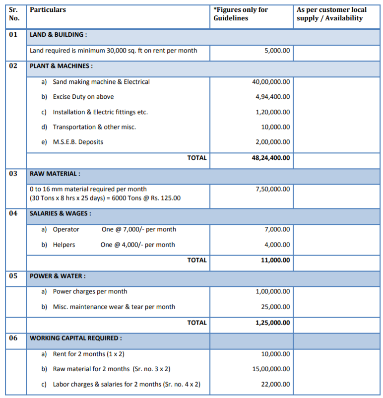 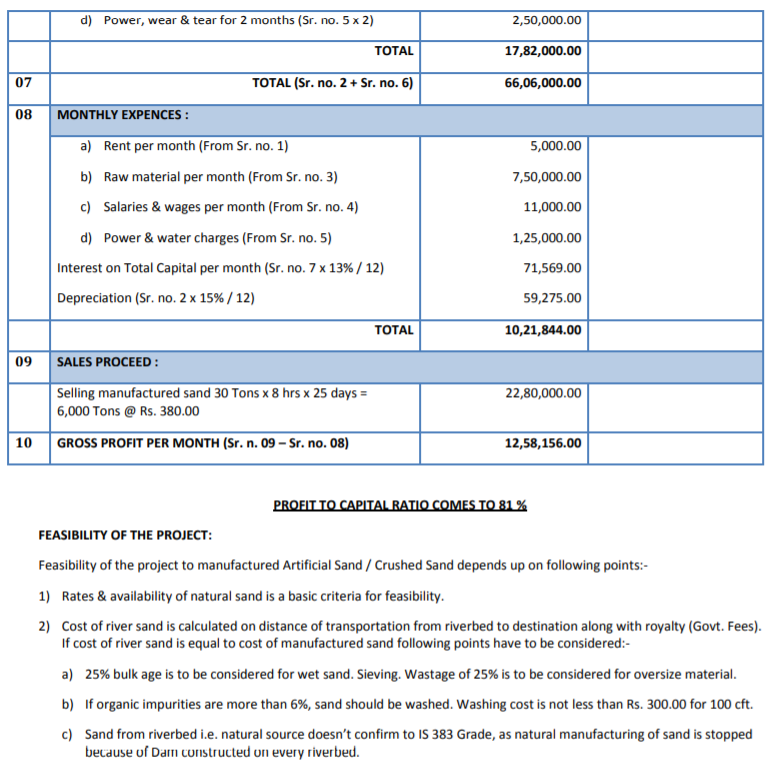
NOTE: This is a guideline how to make profitability report. Rates may vary according to location hence, visitor should workout profitability report according to local rates. Calculation you can do by filling the below table online on the same page.
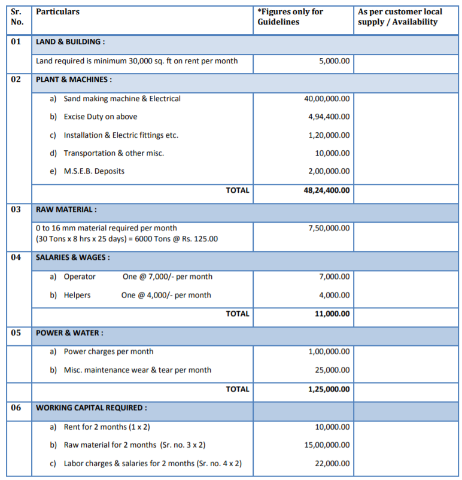 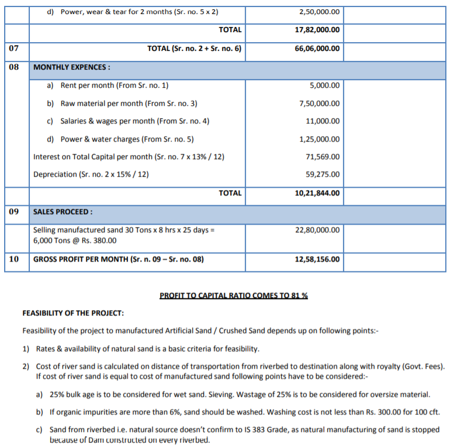
Ans.: D.F.P. (Dust Free Production) Technology is a unique attachment which can be fitted only with Akashganga’s VSI Crushers. This attachment is designed for keeping the quality seeking customers in mind. D.F.P. Technology separates maximum fines
below 150 microns from crushed product. These particles are settled & collected in a specially designed Dust arrester & a Bag filter. Separation of fines below 150 microns from crushed product helps in reducing the air pollution & increasing the
quality of the final product.
Ans.: Akashganga helps to promote customers by giving technical knowhow marketing skills, tips for marketing etc.
Ans.: Akashganga has training facilities for operators of sand making machines & also gives online based services with all technologies.
Ans.: The technical name of sand is ‘Fine aggregate’. Sand means the material below 4.75 mm up to 150 microns with proper gradation of particles as per IS 383 Standard which was published in 1970. Gradation Chart is mentioned below:-
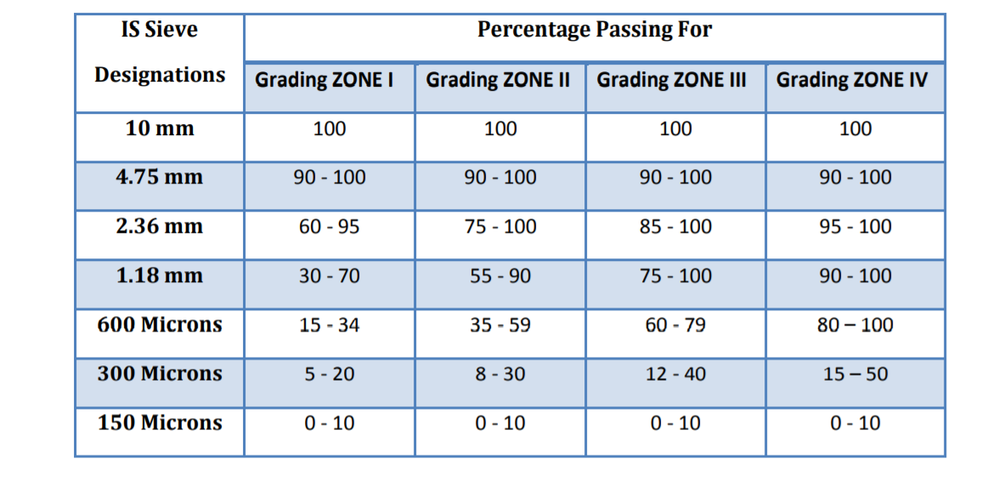 Because of this gradation voids in the sand is minimized & the sand can’t be rejected for any type of project work.
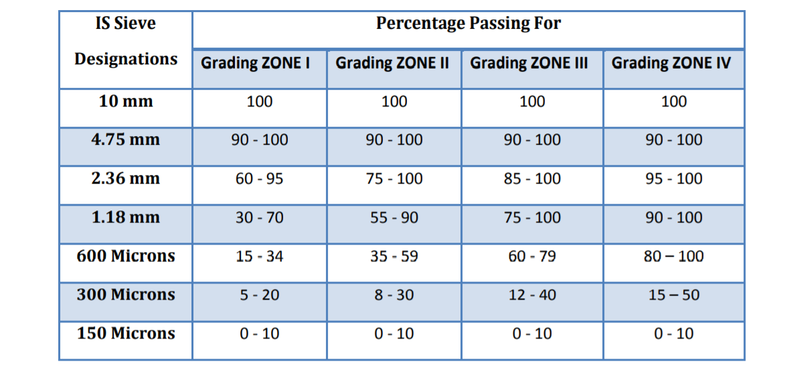 Because of this gradation voids in the sand is minimized & the sand can’t be rejected for any type of project work.
Ans.: Fine aggregates (Sand) designed by the Indian standard IS 383 is used in cement concrete to achieve good quality concrete for buildings & dam constructions. It is used as filler material to fill the void in aggregates. Sand should be in proper
gradation, these gradations mentioned in the IS 383. Till today river sand was used as a fine aggregates which was very economical earlier but, now a days it becoming difficult to gate good quality sand from short distance. Artificial sand is the
perfect substitute for River sand which can be used in concrete mix.
Ans.: Artificial Sand / Manufactured Sand / Crushed Sand have following advantages over Natural Sand:-
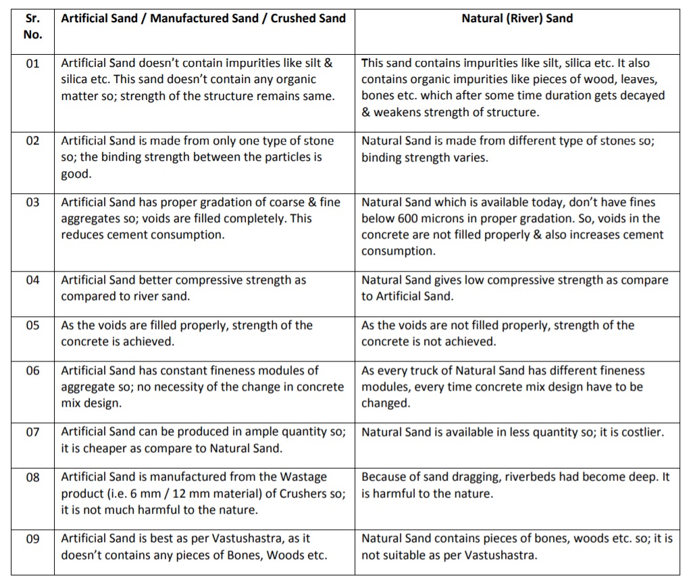
Ans.: Sand is washed for removing the unwanted impurities below 150 microns like silt, silica etc. As the artificial sand is made from the stone, it doesn’t contain impurities like silt, silica & mica. In IS 383, 20% fines below 150 microns are
allowed in Crushed stone Sand. If customer requires minimizing the quantity of fines below 150 Microns, then it is necessary to wash the sand. Akashganga’s VSI crusher facilitates an unique attachment of D.F.P. (Dust Free Production) Technology. This
helps in removing the fines below 150 microns by using air suction. This is a 100% Dry Process no water is required. So if VSI crusher is installed with D.F.P. Technology, there is no need to wash the sand.
Ans.: Fines which are blown away in the air at the time of crushing can be considered as wastage. All other material can be converted into Sand. If customer removes the fines below 150 microns then these fines can be supplied to paint manufacturing
industries, Multicolor paving block making units, gray putty can be manufactured.
Ans.:
• 1 st you should know what is sand and what is role of the sand in the concrete?
The technical name of sand is “Fine Aggregates”. Government authorities had provided IS code for gradation of sand, i.e. IS 383, published in 1970.
• In this, sand is divided into 4 different zones as, Zone I, Zone II, Zone III & Zone IV. Sieve analysis for these Zones is attached for your reference.
• So in short sand is nothing but gradation of particles below 4.75 mm upto 150 Microns. Percentage of above gradations differs for different Zones.
• Only Akashganga’s Sand making machine can give sand as per these gradations. that to stone available in your area.
• 1 st you should know what is sand and what is role of the sand in the concrete?
The technical name of sand is “Fine Aggregates”. Government authorities had provided IS code for gradation of sand, i.e. IS 383, published in 1970.
• In this, sand is divided into 4 different zones as, Zone I, Zone II, Zone III & Zone IV. Sieve analysis for these Zones is attached for your reference.
• So in short sand is nothing but gradation of particles below 4.75 mm upto 150 Microns. Percentage of above gradations differs for different Zones.
• Only Akashganga’s Sand making machine can give sand as per these gradations. that to stone available in your area.
Ans.: These are names of the sand. The company, who manufactures the sand, sells it with their Brand name. All above are Brand names. The product what they are selling is the same what Akashganga’s machine manufacture.